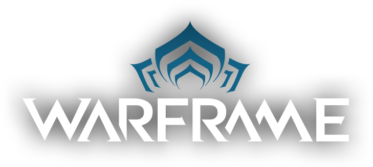

<nav class="navbar navbar-expand-lg navbar navbar-dark bg-dark">
    <a class="navbar-brand" href="index.php">
        
    </a>
    <button class="navbar-toggler" type="button" data-toggle="collapse" data-target="#navbarSupportedContent" aria-controls="navbarSupportedContent" aria-expanded="false" aria-label="Toggle navigation">
      <span class="navbar-toggler-icon"></span>
    </button>

    
    
  
    <div class="collapse navbar-collapse nav justify-content-end"  id="navbarSupportedContent">
        <ul class="nav nav-tabs">
            
            <li class="nav-item dropdown">
              <a class="nav-link dropdown-toggle" data-toggle="dropdown" href="#" role="button" aria-haspopup="true" aria-expanded="false">Warframes</a>
              <div class="dropdown-menu">
                <a class="dropdown-item" href="excalibur.php">Excalibur</a>
                <a class="dropdown-item" href="chroma.php">Chroma</a>
                <a class="dropdown-item" href="loki.php">Loki</a>
                <a class="dropdown-item" href="limbo.php">Limbo</a>
                <a class="dropdown-item" href="rhino.php">Rhino</a>
                <a class="dropdown-item" href="zephyr.php">Zephyr</a>
              </div>
            </li>  
          </ul>

    </div>
  </nav>
